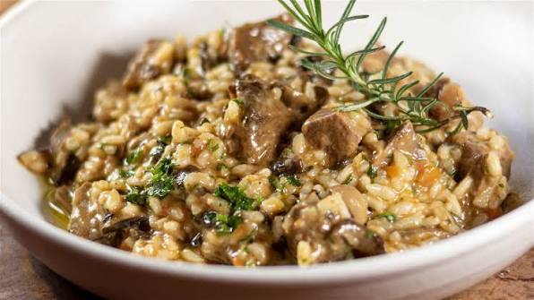

Home
Risotto

Description
Risotto is a traditional Italian rice dish known for
its creamy texture. It is prepared by slowly cooking
rice in broth while stirring until the liquid is absorbed.
This mushroom risotto combines tender mushrooms,
parmesan cheese, and buttery rice to create a rich
and flavorful meal.
Ingredients
- 1 cup Arborio rice
- 200g mushrooms, sliced
- 4 cups chicken or vegetable broth
- 1 small onion, chopped
- 2 cloves garlic, minced
- 1/2 cup parmesan cheese
- 2 tablespoons butter
- 1 tablespoon olive oil
- Salt and pepper
Steps
- Heat the broth in a saucepan and keep it warm.
- Heat olive oil and one tablespoon of butter in a pan.
- Add the onion and garlic, then sauté until softened.
- Add the mushrooms and cook until tender.
- Stir in the Arborio rice and cook for about two minutes.
- Add one ladle of warm broth and stir until absorbed.
- Continue adding broth gradually while stirring.
- Repeat until the rice is creamy and tender, around 18-20 minutes.
- Stir in the remaining butter and parmesan cheese.
- Season with salt and pepper before serving.